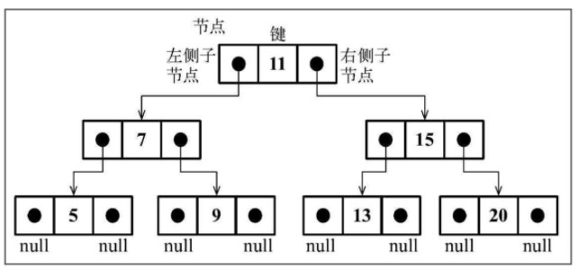

数据结构与算法-树
《学习JavaScript数据结构与算法(第3版)》
树是一种分层数据的抽象模型。
一个树结构包含一系列存在父子关系的节点。每个节点都有一个父节点（除了顶部的第一个节点）以及零个或多个子节点：

树的每个元素都叫做节点，节点分为内部节点（有子节点的节点）和外部节点（叶节点，无子节点的节点）。
位于树顶部（第0层）的节点叫做根节点。
子树由节点和它的后代构成。
节点的深度取决于祖先节点的数量。树的高度取决于所有节点深度的最大值。
二叉树 & 二叉搜索树（BST）
二叉树中的节点最多只能有两个子节点：一个是左侧子节点，另一个是右侧子节点。这个定义有助于我们写出更高效地在树中插入、查找和删除节点的算法。
满二叉树：深度为k且有2^k-1个节点的二叉树，即除叶节点外每个节点都有左右子节点。
二叉搜索树（BST）是二叉树的一种，但是只允许你在左侧节点存储（比父节点）小的值，在右侧节点存储（比父节点）大的值。
二叉搜索树数据结构的组织方式：
将通过指针（引用）来表示节点之间的关系（树相关的术语称其为边）。
树中的每个节点都包含两个指针，一个指向左侧的子节点，另一个指向右侧的子节点。
键是树相关术语中对节点的称呼。
树的遍历
深度优先搜索（DFS）：先序遍历，中序遍历，后序遍历
- 中序遍历(
inOrder)：是一种以上行顺序访问BST所有节点的遍历方式，也就是以从最小到最大的顺序访问所有节点。中序遍历的一种应用就是对树进行排序操作。左子树 -> 根节点 -> 右子树。 - 先序遍历(
preOrder)：是以优先于后代节点的顺序访问每个节点的。先序遍历的一种应用是打印一个结构化的文档。根节点 -> 左子树 -> 右子树。 - 后序遍历(
postOrder)：是先访问节点的后代节点，再访问节点本身。后序遍历的一种应用是计算一个目录及其子目录中所有文件所占空间的大小。左子树 -> 右子树 -> 根节点。
const Compare = {
LESS_THAN: -1,
BIGGER_THAN: 1,
EQUALS: 0
}
function defaultCompare(a, b) {
if (a === b) {
return Compare.EQUALS;
}
return a < b ? Compare.LESS_THAN : Compare.BIGGER_THAN;
}
// 节点类
class Node {
constructor(key) {
this.key = key;
this.left = null;
this.right = null;
}
toString() {
return `${this.key}`;
}
}
export default class BinarySearchTree {
constructor(compareFn = defaultCompare) {
this.compareFn = compareFn; // 用来比较节点值
this.root = null; // Node类型的根节点
}
// 向树中插入一个新的键
insert(key) {
// 特殊情况，是否是第一次插入值
if (this.root == null) {
this.root = new Node(key); // 第一次插入值则赋值为根节点
} else { // 树为非空，需要找到插入新节点的位置
this.insertNode(this.root, key); // 否则就将节点添加到根节点以外的位置
}
}
// 插入新节点
insertNode(node, key) {
// 与父节点的值进行比较，小于父节点的值则插入左边节点，大于等于父节点的值则插入右边节点
if (this.compareFn(key, node.key) === Compare.LESS_THAN) {
if (node.left == null) { // 如果没有左侧子节点
node.left = new Node(key); // 就在此处插入新的节点
} else {
// 有左侧子节点，继续递归找到树的下一层（到左侧节点子树）
this.insertNode(node.left, key);
}
} else if (node.right == null) { // 父节点没有右侧子节点
node.right = new Node(key); // 在此处插入新的节点
} else { // 大于等于父节点的值，且父节点有右侧子节点
this.insertNode(node.right, key); // 继续递归找到树的下一层（到右侧节点子树），直到找到右侧为空的节点
}
}
// 返回树的根节点
getRoot() {
return this.root;
}
// 在树中查找一个键。如果节点存在，则返回true；如果不存在，则返回false
search(key) {
return this.searchNode(this.root, key);
}
// 搜索节点递归函数 来寻找一棵树或其任意子树中的一个特定的值
searchNode(node, key) {
if (node == null) { // 验证传入的节点是否合法
return false; // 一直搜索到叶子节点的子节点（null），返回false表示没有找到搜索的节点
}
if (this.compareFn(key, node.key) === Compare.LESS_THAN) { // 如果要找的键比当前节点的值小，则向左子树查找
return this.searchNode(node.left, key);
} else if (this.compareFn(key, node.key) === Compare.BIGGER_THAN) { // 如果要找的键比道歉节点的值大，则向右子树查找
return this.searchNode(node.right, key);
}
// 否则就和当前节点的值相等，返回true表示找到节点
return true;
}
// 通过中序遍历的方式遍历所有的节点
inOrderTraverse(callback) {
// 辅助方法，接受一个节点和对应的回调函数
// 回调函数用来定义对遍历到的每个节点进行的操作（访问者模式）
this.inOrderTraverseNode(this.root, callback);
}
// 中序遍历递归函数
// 中序遍历左子树会一直找到最左边的叶子节点a进行回调操作然后对叶子节点a的父节点b进行操作再对叶子节点的右兄弟节点c进行操作
// 操作结束后响应递归函数到上一层b的父节点d的递归中，进行对b的父节点d进行回调操作后，再对d的右子树进行递归函数
// d的右子树子节点e进入递归找到左叶子节点f和右叶子节点g，顺序响应左叶子节点f、父节点e、右叶子节点g，然后回到上一层父节点d的递归
// 响应完右子树中序遍历后，再继续响应节点d的上一层递归
inOrderTraverseNode(node, callback) {
if (node != null) { // 递归算法的基线条件，判断当前节点是否为空
this.inOrderTraverseNode(node.left, callback); // 中序遍历左子树
callback(node.key); // 访问根节点，对根节点进行回调操作
this.inOrderTraverseNode(node.right, callback); // 中序遍历右子树
}
}
// 通过先序遍历方式遍历所有节点
preOrderTraverse(callback) {
this.preOrderTraverseNode(this.root, callback);
}
// 先序遍历递归函数
// 先序遍历会从根节点a开始响应回调后遍历左子树，进入递归后左子树父节点b响应回调后进入b的左子树递归，逐层递归，并响应父节点回调
// 所有左子树的内部节点调用完后，最左边的叶子节点进行回调后再进行右兄弟节点回调，再回到上一层的右兄子树的回调中
preOrderTraverseNode(node, callback) {
if (node != null) { // 递归算法的基线条件，判断当前节点是否为空
callback(node.key); // 访问根节点，对根节点进行回调操作
this.preOrderTraverseNode(node.left, callback); // 先序遍历左子树
this.preOrderTraverseNode(node.right, callback); // 先序遍历右子树
}
}
// 通过后序遍历方式遍历所有节点
postOrderTraverse(callback) {
this.postOrderTraverseNode(this.root, callback);
}
// 后序遍历递归函数
// 后序遍历是最先递归到最左边的叶子节点a进行回调后，再遍历到叶子节点a的兄弟节点b响应回调后，再到节点a的父节点c响应回调后，回到上一层递归中
postOrderTraverseNode(node, callback) {
if (node != null) { // 递归算法的基线条件，判断当前节点是否为空
this.postOrderTraverseNode(node.left, callback); // 后序遍历左子树
this.postOrderTraverseNode(node.right, callback); // 后序遍历右子树
callback(node.key); // 访问根节点，对根节点进行回调操作
}
}
// 返回树中最小的值/键
min() {
return this.minNode(this.root);
}
// 返回最小节点递归函数，找到一棵树或其子树中最小的键，即找到最左端的节点，并返回值
minNode(node) {
let current = node;
while (current != null && current.left != null) {
current = current.left;
}
return current;
}
// 返回树中最大的值/键
max() {
return this.maxNode(this.root);
}
// 返回最大节点递归函数，找到一棵树或其子树中最大的键，即找到最右端的节点，并返回值
maxNode(node) {
let current = node;
while (current != null && current.right != null) {
current = current.right;
}
return current;
}
// 从树中移除某个键
remove(key) {
this.root = this.removeNode(this.root, key); // root被赋值为removeNode方法的返回值
}
// 移除节点的递归函数
removeNode(node, key) {
if (node == null) { // 检查节点的合法性
return null; // 该节点不存在
}
// 需要在树中找到要移除的键
if (this.compareFn(key, node.key) === Compare.LESS_THAN) { // 如果要找的键比当前节点小，则向左子树查找
node.left = this.removeNode(node.left, key); // 沿着树的左边找到下一个节点
return node; // 返回更新后的节点
} else if (this.compareFn(key, node.key) === Compare.BIGGER_THAN) { // 如果要找的键比当前节点大，则向右子树查找
node.right = this.removeNode(node.right, key); // 沿着树的右边找到下一个节点
return node; // 返回更新后的节点
}
// 否则，键值和当前节点值相等，找到需要移除的键
// 有三种情况
// 叶子节点
if (node.left == null && node.right == null) {
node = null; // 移除，赋值为null
return node; // 返回null来解除对应的父节点指针（引用）node.left|node.right|root = null
}
// 有一个子节点的节点
if (node.left == null) { // 左子节点为空
node = node.right; // 将指向当前节点的指针指向右子节点
return node; // 返回更新后的节点
} else if (node.right == null) { // 右子节点为空
node = node.left; // 将指向当前节点的指针指向左子节点
return node; // 返回更新后的节点
}
// 有两个子节点的节点
const aux = this.minNode(node.right); // 找到右子树中最小的节点，成为继承者
node.key = aux.key; // 用右子树中最小节点的键更新当前节点的值
node.right = this.removeNode(node.right, aux.key); // 递归移除查找到的右子树中的继承者
return node; // 返回更新后的节点
}
}
BST 存在一个问题：取决于你添加的节点数，树的一条边可能会非常深；也就是说，树的一条分支会有很多层，而其他的分支却只有几层。这会在需要在某条边上添加、移除和搜索某个节点时引起一些性能问题
面试题目
平衡二叉树（AVL树）
AVL 树是一种自平衡二叉搜索树，意思是任何一个节点左右两侧子树的高度之差最多为1。
添加或移除节点时，AVL 树会尝试保持自平衡。任意一个节点（不论深度）的左子树和右子树高度最多相差1。添加或移除节点时，AVL 树会尽可能尝试转换为完全树。
平衡二叉树是特殊的二叉搜索树。平衡二叉树在插入或移除节点的时候需要检验平衡因子。
平衡因子：在 AVL 树中，需要对每个节点计算右子树高度（hr）和左子树高度（hl）之间的差值，该值（hr - hl）应为0，1或-1。如果结果超出范围，则需要平衡该 AVL 树。
import { Compare, defaultCompare } from '../util';
import BinarySearchTree from './binary-search-tree';
import { Node } from './models/node';
// 平衡因子常量
const BalanceFactor = {
UNBALANCED_RIGHT: 1,
SLIGHTLY_UNBALANCED_RIGHT: 2,
BALANCED: 3,
SLIGHTLY_UNBALANCED_LEFT: 4,
UNBALANCED_LEFT: 5
};
// AVL树继承BST类但是需要重写insert、insertNode和removeNode方法
export default class AVLTree extends BinarySearchTree {
constructor(compareFn = defaultCompare) {
super(compareFn);
this.compareFn = compareFn;
this.root = null;
}
// 计算节点高度
getNodeHeight(node) {
if (node == null) {
return -1;
}
return Math.max(this.getNodeHeight(node.left), this.getNodeHeight(node.right)) + 1;
}
/**
* Left left case: rotate right 向右的单旋转
* 出现于节点的左侧子节点高度大于右侧子节点高度时，并且左侧子节点也是平衡或左侧较重时
* b a
* / \ / \
* a e -> rotationLL(b) -> c b
* / \ / \
* c d d e
*
* @param node Node<T>
*/
rotationLL(node) { // 当前节点位置b
// 向右旋转，根节点b变为b的左子节点a
// 以a为根节点时，a节点变成了b节点的父节点，a的右子节点变为b节点替换了d节点的位置，b节点的左侧此时为空
// a节点的原右子节点d，应该处于a节点的右侧（右子树），但b节点为a的右子节点
// d节点的值小于b节点，d节点赋值到b节点的左子节点上
const tmp = node.left; // 变量记录根节点b的左节点a
node.left = tmp.right; // 将a的右节点d赋值给b的左节点
tmp.right = node; // a的右节点变成b节点
return tmp; // 将新的节点a替换当前位置的节点b
}
/**
* Right right case: rotate left 向左的单旋转
* 出现于节点的右侧子节点的高度大于左侧子节点的高度，并且右侧子节点也是平衡或右侧较重时
* a b
* / \ / \
* c b -> rotationRR(a) -> a e
* / \ / \
* d e c d
*
* @param node Node<T>
*/
rotationRR(node) { // 当前节点位置a
// 向左旋转，根节点a变为a的右子节点b
// 以b为根节点时，b节点变成了a节点的父节点，b的左子节点变为a节点替换了d节点的位置，a节点的右侧此时为空
// b节点的原左子节点d，应该处于b节点的左侧（左子树），但a节点为b的左子节点
// d节点的值大于a节点，d节点赋值到a节点的右子节点上
const tmp = node.right; // 变量记录根节点a的右节点b
node.right = tmp.left; // 将b的左节点变为a的右节点
tmp.left = node; // b的左节点变为a节点
return tmp; // 将新的节点b替换当前位置的节点a
}
/**
* Left right case: rotate left then right 左右双转 向左旋转后再向右旋转 RR -> LL
* 出现于左侧子节点的高度大于右侧子节点的高度，并且左侧子节点的右侧较重
* @param node Node<T>
*/
rotationLR(node) {
node.left = this.rotationRR(node.left); // 左侧子树先进行向左旋转
return this.rotationLL(node); // 上一层的树进行向右旋转
}
/**
* Right left case: rotate right then left 右左双转 向右旋转后再向左旋转 LL -> RR
* @param node Node<T>
*/
rotationRL(node) {
node.right = this.rotationLL(node.right);
return this.rotationRR(node);
}
// 递归计算以每个插入树的节点为根的节点的平衡因子
getBalanceFactor(node) {
const heightDifference = this.getNodeHeight(node.left) - this.getNodeHeight(node.right);
switch (heightDifference) {
case -2:
return BalanceFactor.UNBALANCED_RIGHT;
case -1:
return BalanceFactor.SLIGHTLY_UNBALANCED_RIGHT;
case 1:
return BalanceFactor.SLIGHTLY_UNBALANCED_LEFT;
case 2:
return BalanceFactor.UNBALANCED_LEFT;
default:
return BalanceFactor.BALANCED;
}
}
// 插入节点
insert(key) {
this.root = this.insertNode(this.root, key);
}
// 插入节点递归函数
insertNode(node, key) {
// 插入节点
if (node == null) {
return new Node(key);
} else if (this.compareFn(key, node.key) === Compare.LESS_THAN) {
node.left = this.insertNode(node.left, key);
} else if (this.compareFn(key, node.key) === Compare.BIGGER_THAN) {
node.right = this.insertNode(node.right, key);
} else {
return node; // 重复键值
}
// 验证以插入节点为根的子树插入节点后树是否平衡
const balanceFactor = this.getBalanceFactor(node); // 检测平衡因子
// 左侧子树较重
if (balanceFactor === BalanceFactor.UNBALANCED_LEFT) {
// 插入的键是否小于左侧子节点的键
if (this.compareFn(key, node.left.key) === Compare.LESS_THAN) {
// 小于左侧子节点，则插入在左侧子节点的左侧，左侧子节点的左侧偏重，需要向右旋转
// Left left case 向右旋转
node = this.rotationLL(node);
} else {
// 大于左侧子节点，则插入在左侧子节点的右边，左侧子节点的右侧偏重，需要向左旋转后向右旋转
// Left right case 向左旋转后向右旋转
return this.rotationLR(node);
}
}
// 右侧子树较重
if (balanceFactor === BalanceFactor.UNBALANCED_RIGHT) {
// 插入的键是否大于右侧子节点的键
if (this.compareFn(key, node.right.key) === Compare.BIGGER_THAN) {
// 大于右侧子节点，则插入在右侧子节点的右侧，右侧子节点的右侧偏重，需要向左旋转
// Right right case 向左旋转
node = this.rotationRR(node);
} else {
// 小于右侧子节点，则插入在右侧子节点的左侧，右侧子节点的左侧偏重，需要先向右旋转再向左旋转
// Right left case 向右旋转后向左旋转
return this.rotationRL(node);
}
}
return node;
}
// 移除节点的递归函数
removeNode(node, key) {
node = super.removeNode(node, key); // 父级BST类的移除节点递归函数
if (node == null) { // 移除结果为null 则未找到需移除节点
return node;
}
// 移除节点后，验证以移除节点为根的子树是否平衡
const balanceFactor = this.getBalanceFactor(node);
// 左侧子树较重
if (balanceFactor === BalanceFactor.UNBALANCED_LEFT) {
// 计算左侧子树的平衡因子，平衡或略微偏重，则做向右旋转
// Left left case 向右旋转
if (
this.getBalanceFactor(node.left) === BalanceFactor.BALANCED ||
this.getBalanceFactor(node.left) === BalanceFactor.SLIGHTLY_UNBALANCED_LEFT
) {
return this.rotationLL(node);
}
// 计算左侧子树的平衡因子，右侧略微偏重，则先向左旋转后再向右旋转
// Left right case 向左旋转后向右旋转
if (this.getBalanceFactor(node.left) === BalanceFactor.SLIGHTLY_UNBALANCED_RIGHT) {
return this.rotationLR(node.left);
}
}
// 右侧子树偏重
if (balanceFactor === BalanceFactor.UNBALANCED_RIGHT) {
// 计算右侧子树的平衡因子，平衡或右侧略重，则做向左旋转
// Right right case 向左旋转
if (
this.getBalanceFactor(node.right) === BalanceFactor.BALANCED ||
this.getBalanceFactor(node.right) === BalanceFactor.SLIGHTLY_UNBALANCED_RIGHT
) {
return this.rotationRR(node);
}
// 计算右侧子树的平衡因子，左侧略重，则做向右旋转后向左旋转
// Right left case 向右旋转后向左旋转
if (this.getBalanceFactor(node.right) === BalanceFactor.SLIGHTLY_UNBALANCED_LEFT) {
return this.rotationRL(node.right);
}
}
return node;
}
}红黑树
红黑树是一个自平衡二叉树，也是二叉搜索树的一种。
如果需要多次插入和删除的自平衡树，红黑树较为合适；如果需要多次搜索，插入和删除频率较少，平衡二叉树较为合适。
红黑树遵循的规则：
- 每个节点不是红的就是黑的；
- 树的根节点是黑的；
- 所有叶节点都是黑的；
- 如果一个节点是红的，那么它的两个子节点都是黑的；
- 不能有两个相邻的红节点，一个红节点不能有红的父节点或子节点；
- 从给定的节点到它的后代节点（null叶节点）的所有路径包含相同数量的黑色节点。
树不平衡的情况：
父节点是祖父节点的左侧子节点时，父节点的兄弟节点是黑色的
插入节点是左侧子节点

插入节点是右侧子节点

父节点是祖父节点的右侧子节点时，父节点的兄弟节点是黑色的
插入节点是左侧子节点

插入节点是右侧子节点

import { Compare, defaultCompare } from '../util';
import BinarySearchTree from './binary-search-tree';
import { Node } from './models/node';
// 平衡因子常量
const BalanceFactor = {
UNBALANCED_RIGHT: 1,
SLIGHTLY_UNBALANCED_RIGHT: 2,
BALANCED: 3,
SLIGHTLY_UNBALANCED_LEFT: 4,
UNBALANCED_LEFT: 5
};
const Colors = {
RED: 0,
BLACK: 1
};
class RedBlackNode extends Node {
constructor(key) {
super(key);
this.color = Colors.RED; // 节点的颜色
this.parent = null; // 指向父节点的引用
}
isRed() {
return this.color === Colors.RED;
}
flipColor() {
if (this.color === Colors.RED) {
this.color = Colors.BLACK;
} else {
this.color = Colors.RED;
}
}
}
// 红黑树继承BST类但是需要重写insert、insertNode和removeNode方法
export default class RedBlackTree extends BinarySearchTree {
constructor(compareFn = defaultCompare) {
super(compareFn);
this.compareFn = compareFn;
this.root = null;
}
// 向红黑树种插入节点
insert(key) {
if (this.root == null) {
// 如果树是空的
this.root = new RedBlackNode(key); // 创建一个红黑树节点
this.root.color = Colors.BLACK; // 根节点颜色设置为红色
} else {
const newNode = this.insertNode(this.root, key); // 插入节点
this.fixTreeProperties(newNode); // 验证节点插入后，红黑树的规则是否得到了满足
}
}
// 插入节点的递归函数
insertNode(node, key) {
if (this.compareFn(key, node.key) === Compare.LESS_THAN) {
if (node.left == null) {
node.left = new RedBlackNode(key);
node.left.parent = node; // 保存指向被插入节点父节点的引用
return node.left; // 返回节点的引用
} else {
return this.insertNode(node.left, key);
}
} else if (node.right == null) {
node.right = new RedBlackNode(key);
node.right.parent = node; // 保存指向被插入节点父节点的引用
return node.right; // 返回节点的引用
} else {
// 不符合条件继续向下层查找
return this.insertNode(node.right, key)
}
}
// 插入节点后验证红黑树属性，可能需要重新填色和旋转
fixTreeProperties(node) {
// 验证父节点是红色，且这个节点不是黑色
while (node && node.parent && node.parent.color.isRed() && node.color !== Color.BLACK) {
let parent = node.parent; // 父节点引用
const grandParent = parent.parent; // 祖父节点
// 验证父节点是左侧子节点还是右侧子节点
if (grandParent && grandParent.left === parent) {
// 父节点是左侧子节点
const uncle = grandParent.right; // 叔节点，父节点的兄弟节点
if (uncle && uncle.color === Colors.RED) { // 验证叔节点是否是红色的
// 叔节点是红色的，两个相邻的节点不能是红色的
grandParent.color = Colors.RED; // 修改祖父节点的颜色为红色
parent.color = Colors.BLACK; // 修改父节点的颜色为黑色
uncle.color = Colors.BLACK; // 修改叔节点为黑色
node = grandParent; // 当前节点指向祖父节点，继续循环检查树是否有其他冲突
} else {
// 叔节点为黑色时，父节点是红色的，此时树是不平衡的
// 父节点是祖父节点的左子节点，如果节点是父节点的右侧子节点--左旋转后进行右旋转
if (node === parent.right) {
this.rotationRR(parent); // 先进行左旋转
node = parent; // 更新当前节点的引用
parent = node.parent; // 更新父节点的引用
}
// 父节点是祖父节点的左子节点，如果节点是父节点的左侧子节点--右旋转
this.rotationLL(grandParent);
parent.color = Colors.RED; // 更新父节点颜色
grandParent.color = Colors.RED; // 更新祖父节点颜色
node = parent; // 更新当前节点的引用
}
} else {
// 父节点是右侧子节点
const uncle = grandParent.left; // 叔节点，父节点的兄弟节点
if (uncle && uncle.color === Colors.RED) { // 验证叔节点是否是红色的
grandParent.color = Colors.RED;
parent.color = Colors.BLACK;
uncle.color = Colors.BLACK;
node = grandParent;
} else {
// 叔节点为黑色是，父组件为红色的，此时树不平衡
// 父节点是祖父节点的右子节点，如果节点是父节点的左侧子节点--右旋转后左旋转
if (node === parent.left) {
this.rotationLL(parent); // 先进行右旋转
node = parent;
parent = node.parent;
}
// 父节点是祖父节点的右子节点，如果节点是父节点的右侧子节点--左旋转
this.rotationRR(grandParent); // 进行左旋转
parent.color = Colors.BLACK;
grandParent.color = Colors.RED;
node = parent;
}
}
}
this.root.color = Colors.BLACK; // 根节点颜色为黑色
}
// 因为验证红黑树属性的函数中保存了父节点的函数引用，要更新父节点引用，所以旋转函数和AVL树不太一样
// 左-左旋转函数 右旋转
rotationLL(node) {
const tmp = node.left;
node.left = tmp.right;
if (tmp.right && tmp.right.key) {
tmp.right.parent = node;
}
tmp.parent = node.parent;
if (!node.parent) {
this.root = tmp;
} else {
if (node === node.parent.left) {
node.parent.left = tmp;
} else {
node.parent.right = tmp;
}
}
tmp.right = node;
node.parent = tmp;
}
// 右-右旋转函数 左旋转
rotationRR(node) {
const tmp = node.right;
node.right = tmp.left;
if (tmp.left && tmp.left.key) {
tmp.left.parent = node;
}
tmp.parent = node.parent;
if (!node.parent) {
this.root = tmp;
} else {
if (node === node.parent.left) {
node.parent.left = tmp;
} else {
node.parent.right = tmp;
}
}
tmp.left = node;
node.parent = tmp;
}
}